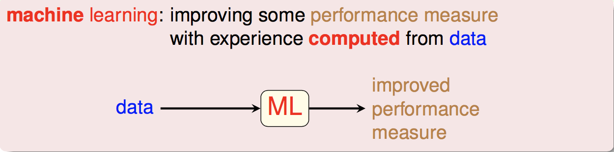
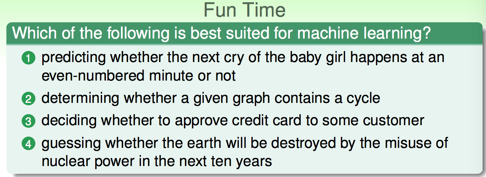
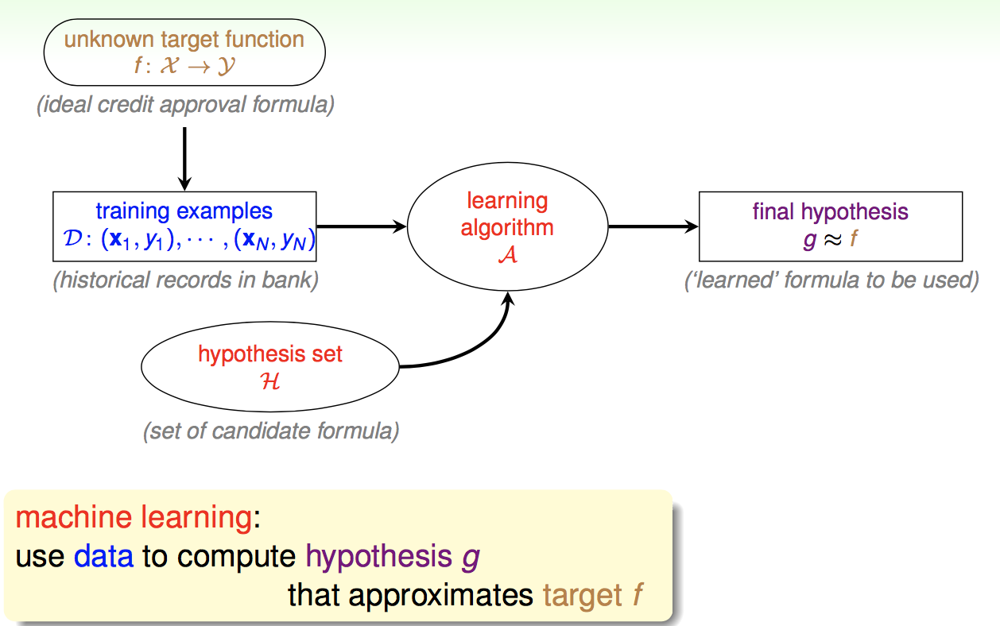
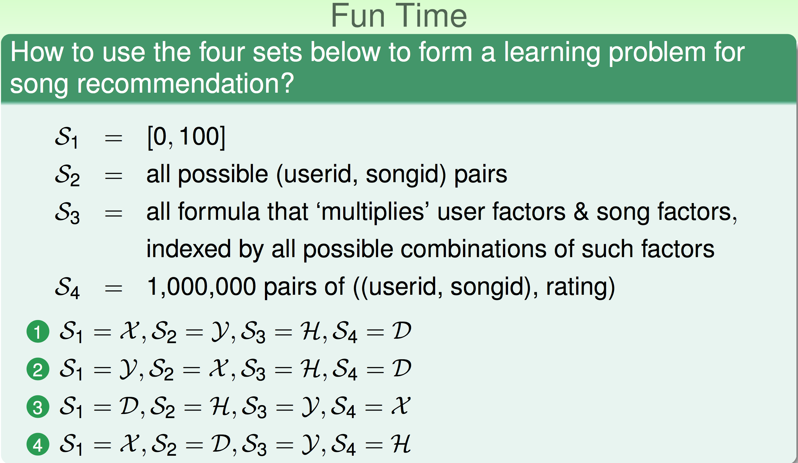

台大林轩田老师的《机器学习基石》和《机器学习技法》课和Courease上Andrew Ng的机器学习课相比，更加注重理论讲解，所以难度较后者大。在观看了前七讲视频后，深深觉得不总结，不做题，这门课是学不好的，遂写下此系列博文。
目录：
- What is Machine Learning
- Applications of Machine Learning
- Components of Machine Learning
- Machine Learning and Other Fields
机器学习是什么
学习是从观察出发，通过大脑进行加工，从而转化为有用的技巧。机器学习就是让机器从已有的数据中观察，再进行加工，从而获得某种技巧。而技巧是指某一方面技巧的增强。

这里面核心的三点是
- 必须要存在模式(pantern)让机器去学习。
- 该问题无法通过数学显示地去定义，无法编程实现。
- 必须要有数据让机器学习。
举例：

- 对于1，小婴儿是否在奇数分钟哭泣没有模式可学。
- 对于2，在数学上可以定义什么样的图有环，既然数学上可以定义，当然可以通过编程实现。实际上这是计算机算法课的内容。判断无线图是否有环，判断有向图是否有环。什么样的情况不能编程实现呢？比如要让计算机判断一张图片是否是猫？我们不可能显示的定义一个猫的所有特性，然后满足这些特性的就是猫，这个时候就可以使用机器学习。
- 对于3，我们有用户的数据，用户自身也有潜在的模式。
- 对于4，我们没有数据，毕竟地球还没有毁灭。
机器学习应用
- 衣(Abu-Mostafa, 2012)。通过销售数据和顾客调查，来进行衣服风格的推荐。
- 食(Sadilek et al., 2013)。通过Twitter上的文本数据及用户定位信息，发现哪家餐厅好或者不好。
- 住(Tsanas and Xifara, 2012)。盖房子时想知道什么样的房子耗能低，通过机器学习已经改好的房子的信息来知道未来房子该怎么盖才可以节能。
- 行(Stallkamp et al., 2012)。自动驾驶中很重要的一点就是能识别交通信号灯。
- 娱。Netflix电影推荐。
机器学习组成

$\mathcal{D}$是我们已有的数据,它是通过某种潜在的模式产生的，记作目标函数 $f$ ，我们不知道$f$长什么样。$\mathcal{H}$是我们的假设空间，由于$\mathcal{H}$ 中可能包含好的假设，也可能包含不好的假设，所以就取决于我们的算法根据已有的数据从$\mathcal{A}$从$\mathcal{H}$ 中选一个合适的 $g$，其中$g\in \mathcal{H}={h_k}$，使得 $g$和目标函数$f$尽量一样。所以我们通常说的模型是指
learning model=$\mathcal{A}$ and $\mathcal{H}$

- 根据上面的叙述，很明显2是正确的。
机器学习相关领域
- 机器学习和数据挖掘：两者大量交叉。
- 机器学习和人工智能：机器学习是人工智能的一种路径。
- 机器学习和统计：统计是机器学习很重要的一种工具。